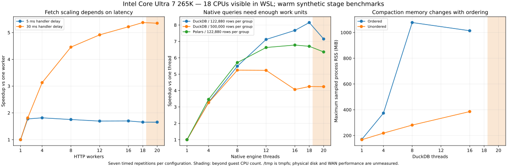

InterMine314 performance review
Source 6a85ed7 · Python 3.14.5 · Intel Core Ultra 7 265K · 18 CPUs exposed to WSL · 20-core host recommendations
Decision
The best next investments are a typed Arrow batch path, configurable DuckDB compaction, larger independent Parquet row groups, and stage-specific budgets. This review covers all 75 runtime Python modules (13,594 lines), inventories all 376 tracked files and contains 25 included opportunities; P09 was excluded by the user and is tracked only as a scope decision in the implementation ledger. 482 selected timed trials across 82 configurations support the worker recommendations; 689 raw trials, including superseded pilot observations, are retained. The raw measurements describe the original baseline. Phase 1 repairs benchmark tooling; Phase 2 adds advisory resource controls. The original measurements are not post-uplift speed claims. This is an analysis and prototype benchmark, not an implemented optimization.
Hardware and the meaning of worker counts
Intel specifies 20 cores (8 P + 12 E), but this WSL environment exposes 18 CPUs and 18 affinity slots. Measurements with 20 workers therefore oversubscribe this guest; they do not benchmark 20 physical cores. There is no reliable guest P/E mapping here: do not pin guessed CPU IDs. Python 3.14.5 has its GIL enabled. Start with a total active native CPU budget of 16 in this guest, leaving two visible CPUs for other work; on the full desktop start at 16 for interactive use and sweep 16/18/20 for an isolated large job. These are calibrated starting policies, not a universal optimum. Native threads in one process often share a library-global pool; separate processes multiply those pools.
Current pipeline and the proposed boundary
Today: requests page -> decompressed lines -> JSON Python values -> row dictionaries -> page lists -> individual yields -> new export batches -> typed/inferred Polars -> temporary Parquet parts -> optional schema rewrites -> one-thread DuckDB merge -> final publication -> DuckDB view -> full Arrow table -> Polars result. Proposed: immutable execution snapshot -> bounded host fetch pool -> terminal-status-validated pages -> typed Arrow batches -> bounded native transform/write stage -> validated partitioned Parquet -> DuckDB views/SQL -> owned Arrow reader or deliberate materialized result. Keep all durable source/derived data and manifests in Parquet. Arrow is the in-memory representation, not a replacement for Parquet persistence. The .duckdb file holds a catalog/views; temporary native scratch/spill is allowed. A dataset must only become visible after every page and schema succeeds.
What the benchmarks establish
These are isolated stage measurements on deterministic synthetic data. HTTP uses the actual Service/Query/Requests/JSON/scheduler path against a loopback gzip server, 32 pages x 1000 rows, with 5 or 30 ms handler delay. The validation server disables Nagle to remove a 40 ms delayed-ACK fixture artifact; original HTTP results are retained but excluded from decisions. No public mine was load tested. SQL scans 4 million rows, filters and groups into 10000 keys; it is not a metadata-only COUNT benchmark. Data live on /tmp tmpfs with warm cache. Native COPY uses a 2GB test budget; its current_copy_geometry baseline reproduces ordering/row-group geometry, not the package 128MB cap. Conversion tests 50000 flat rows; export tests 200000 rows. Toy Python CPU jobs are not InterMine workload speedups. Fresh case processes configure pools before imports; action warmup and 3 or 7 measured repetitions are used, with randomized case order. Native performance is microbenchmark evidence, not a prediction for disk/WAN/full-dataset runtimes.

Measured stage comparisons
Ratios apply only to the named fixture and stage. Prototype conversion does not include all production validation; toy CPU scaling is not a package speedup.
Worker counts by stage
Settings available now versus proposed controls
25 implementation opportunities and immediate code replacement
Likelihood is qualitative engineering judgment; priority 1 items have the strongest near-term case. Effort is an estimate in engineering days. Filter searches every visible table.
P01: Parquet compaction — evidence, memory and implementation risks
Measured Comparison: Unordered COPY: 1 to 16 threads
Measured Stage Speedup: 9.829634844384728
Measurement Limit: Isolated stage only; prototype validation is incomplete for conversion; toy pure-Python scaling is not package scaling.
Memory Effect: Ordered 8-16 threads can retain much more data; preserve a low-memory 1-thread mode.
Must Retain: Atomic publish, numeric-part ordering, timestamp/decimal validation, requested ordering.
Compatibility Risk: Medium
Effort Days Estimate: 2-4
Evidence Ids: ['S05', 'S06', 'S07']
Decision Metrics: ['copy throughput', 'peak RSS', 'spill bytes', 'ordered output equality']
P02: Typed batch conversion — evidence, memory and implementation risks
Measured Comparison: Model conversion to typed Arrow prototype
Measured Stage Speedup: 2.7581068242810356
Measurement Limit: Isolated stage only; prototype validation is incomplete for conversion; toy pure-Python scaling is not package scaling.
Memory Effect: Arrow fixture buffers were 72% smaller than the Python graph, but buffers coexist during conversion.
Must Retain: Exact Decimal scale/overflow, mixed numeric checks, dates, nested values and fallback path.
Compatibility Risk: High
Effort Days Estimate: 5-10
Evidence Ids: ['S09']
Decision Metrics: ['rows/s', 'allocations/row', 'Arrow bytes/row', 'edge-case parity']
P03: Storage layout — evidence, memory and implementation risks
Measurement Limit: No direct benchmark of the proposed change; mechanism/inspection only.
Memory Effect: Bound the row-group accumulator in bytes, not just rows; wide rows need smaller groups.
Must Retain: Single-file opt-in, all-pages-success barrier, rollback and schema unification.
Compatibility Risk: Medium
Effort Days Estimate: 3-6
Evidence Ids: ['S05', 'S07']
Decision Metrics: ['row groups', 'file count', 'write amplification', 'compression ratio', 'scan time']
P04: Remote page fetching — evidence, memory and implementation risks
Measured Comparison: HTTP 30ms: 1 to 16 workers
Measured Stage Speedup: 5.217216039330245
Measurement Limit: Isolated stage only; prototype validation is incomplete for conversion; toy pure-Python scaling is not package scaling.
Memory Effect: Keep pending, buffered and emitting pages charged; pipeline byte cap remains essential.
Must Retain: Terminal footer validation, retry ownership, request timeouts, count/page correctness.
Compatibility Risk: Medium
Effort Days Estimate: 3-5
Evidence Ids: ['S01', 'S14', 'S15']
Decision Metrics: ['rows/s', 'p50/p95 page latency', '429/5xx rate', 'retries', 'queue wait']
P05: Batch hand-off — evidence, memory and implementation risks
Measurement Limit: No direct benchmark of the proposed change; mechanism/inspection only.
Memory Effect: Transfer buffer ownership and charge batches until consumed; avoid row-list duplication.
Must Retain: Public row iterators, close/cancellation, late failures and atomic final publication.
Compatibility Risk: High
Effort Days Estimate: 5-8
Evidence Ids: ['S01', 'S09']
Decision Metrics: ['stage idle time', 'queue depth', 'end-to-end rows/s', 'peak RSS']
P06: Local analytical queries — evidence, memory and implementation risks
Measured Comparison: DuckDB 122880-row groups: 1 to 18 threads
Measured Stage Speedup: 8.151645624036439
Measurement Limit: Isolated stage only; prototype validation is incomplete for conversion; toy pure-Python scaling is not package scaling.
Memory Effect: Streaming avoids materializing every selected row in to_arrow_table(); query state may still buffer.
Must Retain: Connection ownership, local results view, schema guards, materialized API contract.
Compatibility Risk: Medium
Effort Days Estimate: 2-4
Evidence Ids: ['S05', 'S06', 'S08', 'S09']
Decision Metrics: ['time-to-first-batch', 'result bytes', 'query plan', 'peak RSS']
P07: Package resource policy — evidence, memory and implementation risks
Measurement Limit: No direct benchmark of the proposed change; mechanism/inspection only.
Memory Effect: Reserve separate queue, writer and engine memory; DuckDB memory_limit is not total process RSS.
Must Retain: Explicit user overrides, tor_low_mem, lazy imports, existing environment configuration.
Compatibility Risk: Medium
Effort Days Estimate: 3-5
Evidence Ids: ['S01', 'S04', 'S06', 'S10']
Decision Metrics: ['active threads', 'CPU seconds', 'throughput/core', 'RSS', 'spill']
P08: Query preparation per page — evidence, memory and implementation risks
Measurement Limit: No direct benchmark of the proposed change; mechanism/inspection only.
Memory Effect: Avoid repeated deep copies and temporary XML nodes.
Must Retain: Public clone semantics; QuerySpec contains mutable constraint objects despite frozen dataclass.
Compatibility Risk: Medium
Effort Days Estimate: 2-4
Evidence Ids: ['S01']
Decision Metrics: ['preparation ms/page', 'allocations/page', 'XML equivalence', 'mutation isolation']
P10: Memory accounting — evidence, memory and implementation risks
Measurement Limit: No direct benchmark of the proposed change; mechanism/inspection only.
Memory Effect: Current sampled payload estimate was about 51% of the fixture Python graph; neither is total RSS.
Must Retain: Reservations for completed pages, unknown/oversized-page behavior and cancellation accounting.
Compatibility Risk: Medium
Effort Days Estimate: 2-4
Evidence Ids: ['S01', 'S09', 'S10']
Decision Metrics: ['estimated/actual bytes', 'peak outstanding pages', 'RSS overshoot', 'backpressure']
P11: Schema promotion pass — evidence, memory and implementation risks
Measurement Limit: No direct benchmark of the proposed change; mechanism/inspection only.
Memory Effect: Concurrent rewrites multiply frame memory; use one part per permit.
Must Retain: Dynamic decimal scale, null-first batches, mixed types, guarded schema evolution.
Compatibility Risk: High
Effort Days Estimate: 4-7
Evidence Ids: ['S05', 'S09']
Decision Metrics: ['parts rewritten', 'bytes reread', 'schema drift', 'validation failures']
P12: Publication copy — evidence, memory and implementation risks
Measurement Limit: No direct benchmark of the proposed change; mechanism/inspection only.
Memory Effect: Reduces duplicate scratch capacity; atomic publication still requires temporary ownership.
Must Retain: Cross-device fallback, unrelated entries, directory exchange and rollback tests.
Compatibility Risk: Medium
Effort Days Estimate: 2-3
Evidence Ids: ['S05']
Decision Metrics: ['bytes copied', 'scratch high-water', 'publish latency', 'failure recovery']
P13: CSV ingestion — evidence, memory and implementation risks
Measurement Limit: No direct benchmark of the proposed change; mechanism/inspection only.
Memory Effect: Current nonseekable read() materializes the entire CSV; avoid full BytesIO/StringIO snapshots.
Must Retain: CSV dialect/identifier semantics, collisions, borrowed stream ownership and all-or-nothing publication.
Compatibility Risk: Medium
Effort Days Estimate: 3-5
Evidence Ids: ['S03', 'S04', 'S09', 'S10']
Decision Metrics: ['peak RSS', 'input bytes/s', 'projected columns', 'spill']
P14: Identifier uploads — evidence, memory and implementation risks
Measurement Limit: No direct benchmark of the proposed change; mechanism/inspection only.
Memory Effect: Current Arrow batches become a growing Python list plus a joined string before upload.
Must Retain: Leading zeros, quote escaping, null/empty/CRLF rejection before mutation, single mutation attempt.
Compatibility Risk: High
Effort Days Estimate: 4-7
Evidence Ids: ['S09', 'S15']
Decision Metrics: ['body bytes', 'peak RSS', 'serialization ms', 'request count']
P15: Metadata and registry discovery — evidence, memory and implementation risks
Measurement Limit: No direct benchmark of the proposed change; mechanism/inspection only.
Memory Effect: Do not retain every model/template graph indefinitely; bounded caches with active leases.
Must Retain: Service/Registry cache semantics, no eviction/close of in-use clients, authentication boundaries.
Compatibility Risk: Medium
Effort Days Estimate: 3-5
Evidence Ids: ['S01', 'S02', 'S14']
Decision Metrics: ['cold startup', 'cache hit rate', 'duplicate requests', 'live clients']
P16: XML/model construction — evidence, memory and implementation risks
Measurement Limit: No direct benchmark of the proposed change; mechanism/inspection only.
Memory Effect: DOM plus source XML plus descriptors coexist; streaming could lower the peak.
Must Retain: Descriptor identities, inheritance/cycle checks, reverse references and exact model errors.
Compatibility Risk: High
Effort Days Estimate: 4-8
Evidence Ids: ['S02']
Decision Metrics: ['parse wall/CPU time', 'model nodes', 'peak RSS', 'graph parity']
P17: Lazy object hydration — evidence, memory and implementation risks
Measurement Limit: No direct benchmark of the proposed change; mechanism/inspection only.
Memory Effect: Batch and evict hydrated objects; identity maps can grow.
Must Retain: Lazy legacy behavior, identity map, selected nulls, relation cardinality and model binding.
Compatibility Risk: High
Effort Days Estimate: 5-8
Evidence Ids: ['S01', 'S15']
Decision Metrics: ['requests per object', 'p95 hydration time', 'cache size', 'exact results']
P18: Resolution jobs — evidence, memory and implementation risks
Measurement Limit: No direct benchmark of the proposed change; mechanism/inspection only.
Memory Effect: Avoid one sleeping thread per job.
Must Retain: Server backoff, terminal-state behavior, job creation/deletion ownership and no mutation retry.
Compatibility Risk: Medium
Effort Days Estimate: 2-4
Evidence Ids: ['S01', 'S15']
Decision Metrics: ['jobs completed/min', 'poll requests', 'sleeping threads', 'tail latency']
P19: Enrichment analytics — evidence, memory and implementation risks
Measurement Limit: No direct benchmark of the proposed change; mechanism/inspection only.
Memory Effect: Current persist() reloads the entire completed result as a DataFrame.
Must Retain: Existing DataFrame return contract, schema/precision and atomic output.
Compatibility Risk: Medium
Effort Days Estimate: 2-4
Evidence Ids: ['S08', 'S09']
Decision Metrics: ['rows/s', 'materialized bytes', 'peak RSS', 'request errors']
P20: HTTP pool coordination — evidence, memory and implementation risks
Measurement Limit: No direct benchmark of the proposed change; mechanism/inspection only.
Memory Effect: Avoid leaked sessions/adapters and unbounded simultaneous sockets.
Must Retain: Caller sessions unchanged, per-request retry contexts, proxy/TLS and close-once contracts.
Compatibility Risk: High
Effort Days Estimate: 3-6
Evidence Ids: ['S14', 'S15']
Decision Metrics: ['open sockets', 'pool wait', 'TLS handshakes', 'retries', 'resource leaks']
P21: Dataset metadata discovery — evidence, memory and implementation risks
Measurement Limit: No direct benchmark of the proposed change; mechanism/inspection only.
Memory Effect: Compaction reduces metadata objects and open-file pressure.
Must Retain: Literal path escaping, schema guards, stale-manifest detection and numeric part order.
Compatibility Risk: Medium
Effort Days Estimate: 2-4
Evidence Ids: ['S05', 'S10']
Decision Metrics: ['metadata open count', 'time to plan', 'manifest freshness', 'file count']
P22: Scheduler simplification — evidence, memory and implementation risks
Measurement Limit: No direct benchmark of the proposed change; mechanism/inspection only.
Memory Effect: buffersize is a task/result count, not a bytes envelope.
Must Retain: Custom scheduler byte accounting, unordered completion, page diagnostics and failure cleanup.
Compatibility Risk: Medium
Effort Days Estimate: 2-3
Evidence Ids: ['S01']
Decision Metrics: ['policy branches', 'configuration clarity', 'queue invariants']
P23: Residual Python CPU work — evidence, memory and implementation risks
Measured Comparison: Toy pure Python: serial to 16 interpreters (warm)
Measured Stage Speedup: 12.548511385506114
Measurement Limit: Isolated stage only; prototype validation is incomplete for conversion; toy pure-Python scaling is not package scaling.
Memory Effect: Each process duplicates interpreter state; serialization can dominate and child RSS must be measured.
Must Retain: Exact-integer fallback, no live Service/Session/DuckDB connections across processes.
Compatibility Risk: High
Effort Days Estimate: 3-6
Evidence Ids: ['S01', 'S03', 'S11']
Decision Metrics: ['compute/serialization ratio', 'worker RSS sum', 'startup time', 'task duration']
P24: Plots and helper modules — evidence, memory and implementation risks
Measurement Limit: No direct benchmark of the proposed change; mechanism/inspection only.
Memory Effect: Return only chart-sized data to Python.
Must Retain: Legacy helper outputs, separate account state, plot semantics and public facade bindings.
Compatibility Risk: Medium
Effort Days Estimate: 1-3
Evidence Ids: ['S03', 'S08']
Decision Metrics: ['rows before/after aggregate', 'plot time', 'materialization size']
P25: Mutations and control plane — evidence, memory and implementation risks
Measurement Limit: No direct benchmark of the proposed change; mechanism/inspection only.
Memory Effect: Concurrency adds state and failure complexity without local analytical gain.
Must Retain: Mutation retry safety, temporary list tracking, cleanup and legacy call semantics.
Compatibility Risk: High
Effort Days Estimate: Not a parallelization target
Evidence Ids: ['S02', 'S14']
Decision Metrics: ['duplicate mutations', 'state races', 'cleanup correctness']
P26: Benchmark reliability — evidence, memory and implementation risks
Measurement Limit: No direct benchmark of the proposed change; mechanism/inspection only.
Memory Effect: Record total process-tree RSS and spill, not just batch memory or parent high-water.
Must Retain: Historical evidence and original-client isolation; distinguish COUNT metadata scans from actual data scans.
Compatibility Risk: Low
Effort Days Estimate: 2-4
Evidence Ids: ['S01', 'S05']
Decision Metrics: ['benchmark completion', 'reproducibility', 'source/data hashes', 'stage attribution']
Memory findings and controls
The 50000-row fixture occupies 25,367,672 bytes as a recursively sized unique Python object graph; the current payload estimator reports 12,921,875 bytes. Equivalent Arrow buffers occupy 7,100,700 bytes (72.0% less) and Polars estimates 5,500,700 bytes. These are representations, not RSS; the prototype temporarily retains both Python and native data and its process RSS can exceed the existing converter. Arrow creation from Python rows is not zero-copy. The arrow_column_builders_prototype variant excludes the initial Python row-to-column gather and is a best-case lower bound; arrow_from_pylist_prototype and arrow_columns_from_rows_prototype include that work. Compatible Arrow-to-native interchange can avoid copying; dtype conversion, rechunking, JSON parsing and Parquet decompression can still allocate. Budget memory as live Python pages + Arrow queue + writer/row-group state + engine state + runtime overhead. Count bytes through emission, retain the oversized-page escape policy, and bound both row counts and byte queues. Start with 64-256 MiB queue budgets and 1-2 native batches, then calibrate on real row width. Do not multiply an unconstrained engine pool by every Python worker. /tmp here is RAM-backed, so use a configured on-disk ext4/NVMe scratch path for real out-of-core operation; do not call tmpfs spill a memory reduction.
Parquet and DuckDB architecture
Persist immutable part files, with a Parquet manifest containing query/schema hashes, mine release, row count, input/page range, file bytes, row-group count, checksum and completion state. DuckDB should expose views over those Parquet parts; query consumers should use projection, predicate pushdown and EXPLAIN ANALYZE. Start at 122880 rows/group and 128-512 MiB/file, with a bytes-based upper bound and enough total groups to keep the chosen threads busy. A 4-million-row file with 500000-row groups has only about eight independent scan groups; its 8-thread result beat higher counts. Decouple HTTP page size (start 1000-5000), producer batches (benchmark 10000/32768/65536), row groups and file rotation. Merely increasing writer batches from 10000 to 65536 barely changed the measured current writer: row conversion remains the bottleneck. Zstd remains a sensible baseline; compression-level/codec and actual disk bandwidth sweeps are still needed. Ordered output needs explicit semantics; do not silently switch preserve_insertion_order off. Each concurrent SQL caller needs its own connection/cursor, and concurrent writers must not share the same output target.
Python 3.14 and the Arrow analytics workflow
Use Python threads to overlap network/disk waits, and native DuckDB/Polars/Arrow pools for CPU work. orjson 3.12 holds the GIL; 16 Python decode threads were slightly slower than serial. Python 3.14 map(buffersize=...) is useful for bounded simple task queues but cannot replace this scheduler's byte accounting, unordered delivery, page metadata and failure cleanup. InterpreterPoolExecutor can execute isolated pure-Python CPU tasks in parallel, but tasks/results are serialized and native modules must support subinterpreters; orjson documents no such support. The current nested fetch_page closure and live Query/Session objects are not a drop-in isolated-executor task. Use spawn processes for coarse transforms only after IPC/startup/RSS measurement. A free-threaded 3.14t experiment needs separate wheel validation, runtime GIL checks and locks around compound cache/session operations. The approved workflow uses Python orchestration, Arrow batches, Parquet storage, DuckDB SQL and optional Polars processing. No custom accelerator or additional language runtime is planned.
Immediate replacement and required compatibility
Each replacement task deletes the internal implementation it supersedes after parity checks pass. There is no later retirement cycle. Code supporting unmatched public semantics is a required fallback, not redundant code. Strong candidates are analytical page-to-row-to-batch reassembly, repeated query deep-copy/XML work, Python row round-trip validation after equivalent native validation exists, fixed-schema promotion rewrites, mandatory single-file merging, same-filesystem dataset copying, and full result materialization for reader/path consumers. Preserve public row/legacy facade APIs and their aliases, exact-number guards, footer/status validation, compressed reads, byte-bounded scheduling, custom session ownership and atomic publication. _batch_frame/_same_value remain the compatibility fallback for unsupported or dynamic types until native parity is established. Standard-library Executor.map is not a wholesale replacement for BoundedInflightQueue.
Decision metrics and acceptance gates
Capture wall time, CPU seconds, rows/s, compressed/decoded bytes/s, p50/p95 page latency, retry/throttle/error counts, queue wait/depth/bytes, Python allocation counts, Arrow allocated bytes, total process-tree RSS, effective engine threads, file/row-group counts, compression ratio, bytes rewritten/copied, temporary-space peak, spill, time to first result and cleanup duration. This review stores measured wall/CPU/RSS/output/write-call bytes/CV and leaves production-only metrics unmeasured rather than inventing them. Linux RSS was sampled every 5 ms; lifetime max includes setup, warmups and retained allocations. Process-pool CPU/RSS columns cover the parent only, so they are not total worker memory/CPU comparisons. Seven repetitions cannot establish reliable production p95 tails. Sum of native operator CPU times can exceed wall time. Rank changes using end-to-end Amdahl impact, not multiplying stage speedups: if conversion is 40% of total and becomes 3x faster, total speedup is only 1/(0.6+0.4/3)=1.36x. Accept a tuned count only with at least ~10% repeatable median gain or a material memory improvement, bounded tails/errors and exact result parity; use the smallest count within 5% of best when results are otherwise comparable.
Implementation sequence
Ten phases cover evidence, shared budgets, transport ownership, validated pages, Arrow conversion, Parquet publication, streaming interfaces, metadata and objects, independent jobs, and final acceptance. implementation_tasks.parquet records every task, acceptance check and predecessor. Commit each task to master, push each phase and verify CI before its successor begins. Replace redundant internals in the same task; preserve legacy contracts and precision guards. The default advisory native CPU budget is 16, with 8, 6, 4 and 2 options. Existing external pools may exceed advisory limits and must be reported. Version remains 0.1.8. A successor phase begins only after its predecessor has a recorded successful push and CI run.
Coverage and remaining uncertainty
All tracked source files were inventoried; runtime modules were classified and the transport, scheduler, result conversion, query preparation, storage, CSV/list, metadata/model, registry, enrichment, object and helper call paths inspected. Constraint grammar, path features, auth, errors, lazy reexports and small configuration helpers are control-plane code with low parallel return; preserve them. Existing benchmark/release/test tooling was reviewed as support code, not load tested exhaustively. The phase0_baselines.py entrypoint now calls supported Query APIs and maps its window option to inflight_limit; compressed loopback tests cover joins and late server failure. ResourceProfile now reaches production analytics through ResourceRuntime; preinitialized oversized pools remain advisory and are reported. No production datasets, public-mine worker sweeps, server offset-query plans, authenticated writes, physical disk saturation, energy/power, CPU affinity experiments, Windows-native execution or free-threaded native wheels were certified. Current offset pagination also requires a stable server ordering/snapshot to avoid drifting results; parallelism cannot repair changing data. Keyset/partitioned remote queries are a separate server-capability experiment, especially with joins. Benchmark fixtures do not prove conversion parity for adversarial precision/nested inputs. The source snapshot is bound to the commit and per-file hashes in source_inventory.parquet.
Using the evidence
Open analysis.duckdb with DuckDB and query opportunities, worker_plans, selected_measurements, measured_summary, comparisons, source_inventory, function_inventory, memory_comparison, conversion_profile and sources. All durable evidence tables are Parquet; analysis.duckdb is the database engine catalog and report.html is a derived presentation. Use catalog.open_catalog(directory) or the catalog.py CLI from any working directory; it configures file_search_path for relative Parquet views. With a direct DuckDB connection, set file_search_path to the artifact directory before querying views. Reproduce stage runs with run_benchmarks.py using --stages and --output to avoid overwriting historical evidence. The historical initial HTTP series is intentionally excluded because validation corrected its loopback fixture; all raw series remain inspectable. Source references use pinned GitHits repository evidence and official Intel specifications.
Implementation status and handoff
Git metadata is writable. Task and phase status below comes from the implementation ledger. Version remains 0.1.8.
Planned advisory resource profiles
These allocations are approved starting policies. Phase 2 implements profiles and engine admission; later stage-specific optimizations remain tracked below. Existing external pools may exceed the budget and are reported. Stage pools are not allocated simultaneously.
Workflow technologies
Runtime coverage
All measured configurations, spread and memory
Parent RSS only for process pools. Native pools, setup, warmups and allocator retention affect RSS. Min/median/max and CV are descriptive statistics, not confidence intervals.
Verified primary sources
- S01: CPython 3.14.5 executors — 5607950ef232dad16d75c0cf53101d9649d89115; lines 49-83, 199-209, 246-325. map(buffersize=...) bounds submitted results not yet yielded; interpreter pools isolate mutable state and pickle tasks/results; default thread counts use process-visible CPUs. (GitHits grep/read)
- S02: CPython free threading — 5607950ef232dad16d75c0cf53101d9649d89115; lines 43-91, 122-156. Python 3.14 does not imply a disabled GIL. Unsupported extensions can re-enable it; shared iterators are unsafe; use explicit synchronization and check runtime GIL state after imports. (GitHits read)
- S03: Polars multiprocessing — 1bd8ec12f42d40fcec62badf32ef2177d2377d8d; lines 3-19, 70-79. Polars already uses native parallelism; extra processes can compete for CPU/memory. Use spawn when processes are actually needed with Polars. (GitHits search)
- S04: Polars thread pool — 1bd8ec12f42d40fcec62badf32ef2177d2377d8d; lines 21-39. POLARS_MAX_THREADS is a process-start configuration; the pool cannot be resized after initialization. (GitHits grep)
- S05: DuckDB row groups and file sizes — 70642ff90220c13e7aa6749323bcab8ebd213f66; lines 35-66. Parquet scans parallelize over row groups/files. Guidance favors 100K-1M rows/group and enough groups for the desired threads. Small groups carry overhead. (GitHits grep)
- S06: DuckDB memory and tuning — 70642ff90220c13e7aa6749323bcab8ebd213f66; lines 19-49. Memory depends on query shape; documentation suggests 1-4 GB/thread for ideal analytical workloads. This is guidance, not a mandatory allocation. Grouping/joins may spill. (GitHits read)
- S07: DuckDB ordering and profiling — 70642ff90220c13e7aa6749323bcab8ebd213f66; lines 18-44, 52-100. Disabling insertion-order preservation can reduce memory where ordering is not required; excessive threads can hurt. EXPLAIN ANALYZE identifies expensive operators. (GitHits read)
- S08: DuckDB per-thread connection — 70642ff90220c13e7aa6749323bcab8ebd213f66; lines 37-43. Concurrent Python callers need their own cursor/connection. Query-internal engine threads are different from multiple Python query callers. (GitHits search)
- S09: Arrow interchange — beccec0d0c451b7aa3e4530416ac431b3c035c69; lines 24-70. Arrow C Data/PyCapsule protocols allow compatible buffers to cross language boundaries without Python row objects. Parsing JSON and decompressing Parquet still allocate. (GitHits read)
- S10: Arrow scanner read-ahead — beccec0d0c451b7aa3e4530416ac431b3c035c69; lines 299-363. CPU threading and batch/file read-ahead are independent controls. More read-ahead consumes more memory; configure both CPU and I/O pools. (GitHits grep/read)
- S11: orjson concurrency limits — 6737895a; lines 35-38, 165, 614. Version 3.12.0 holds the GIL during encoding/decoding and documents no subinterpreter support. Free-threading is not certified here. (GitHits grep)
- S14: Requests pool defaults and session state — 6e83187b; lines 79, 206; sessions.py 797-799. Adapter pooling defaults to nonblocking. Sessions also carry mutable cookies/configuration; a thread-safe connection pool alone is not a guarantee for arbitrary shared session mutation. (GitHits grep)
- S15: urllib3 connection capacity — b1d30ab6; lines 145-156. pool_maxsize limits retained connections when block=False; use a separate host admission limit or carefully managed blocking pools to bound simultaneous requests. (GitHits grep)
- S16: Intel 265K hardware — vendor page accessed 2026-10-13; lines Processor Cores (P+E) table. 265K has 20 cores: 8 performance cores and 12 efficiency cores. The measured WSL guest exposes 18 CPUs, without a reliable P/E mapping. (Official Intel web search)
Files